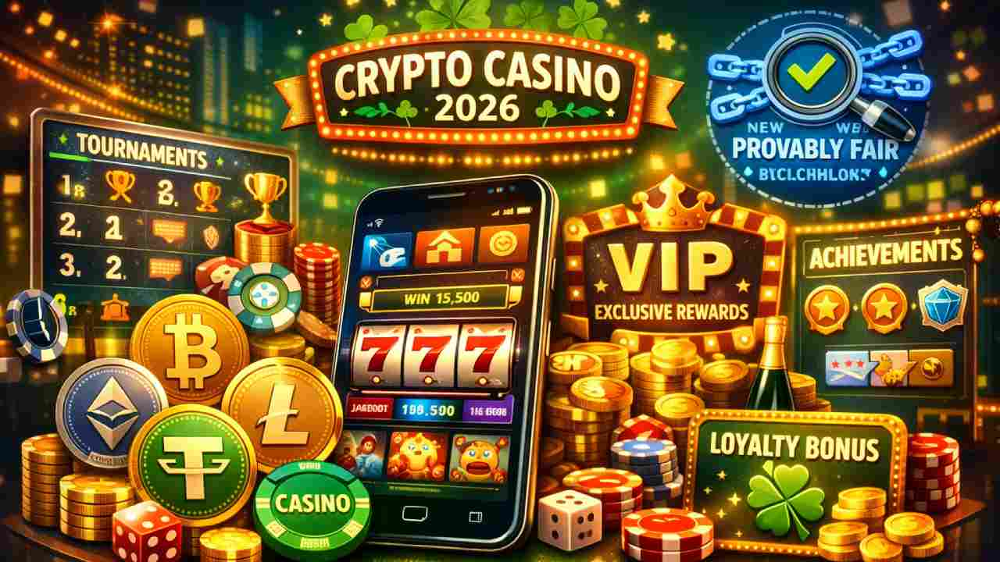
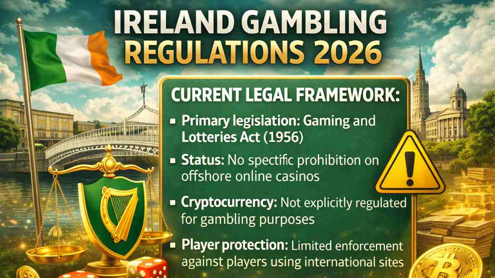

Best Crypto Casinos Ireland 2026 – Top Bitcoin Gambling Sites
Overview of Crypto Gambling in Ireland
The landscape of online gambling in Ireland has undergone a remarkable transformation with the emergence of crypto casinos. As we navigate through 2026, Irish players are increasingly embracing bitcoin casinos and other cryptocurrency gambling platforms for their enhanced privacy, lightning-fast transactions, and innovative gaming experiences.
Key statistics for 2026:
- 65% increase in Irish players using crypto casinos
- Average withdrawal time: Under 10 minutes
- Most popular cryptocurrency: Bitcoin (72%), Ethereum (18%), USDT (10%)
- Mobile gaming: 78% of Irish players prefer mobile crypto casino apps
Why Choose Crypto Casinos?
Top advantages of crypto gambling:
- ✓ Instant deposits and fast withdrawals
- ✓ Enhanced privacy and anonymity
- ✓ Lower transaction fees
- ✓ Provably fair gaming technology
- ✓ Access to exclusive crypto casino bonuses
- ✓ No banking restrictions or chargebacks
The Growing Trend of New Crypto Casinos
New crypto casinos continue to emerge in the Irish market, each bringing innovative features and competitive offerings. These platforms leverage cutting-edge bitcoin casino software to deliver seamless experiences.
What new bitcoin casinos offer in 2026:
- Multi-cryptocurrency support: Bitcoin, Ethereum, Litecoin, USDT TRC20, and crypto casino tokens
- Mobile-first design: Optimized mobile bitcoin casino experiences
- Gamification features: Tournaments, achievements, and loyalty programs
- Provably fair games: Blockchain-verified game outcomes
- VIP programs: Exclusive rewards for high rollers
Top Bitcoin Casinos Ireland 2026
List of Best Bitcoin Casinos for Irish Players
| Casino | Welcome Bonus | Withdrawal Speed | Min Deposit | Rating |
|---|---|---|---|---|
| Sportaza | 200% up to 1 BTC + 100 FS | Instant | €10 | ⭐⭐⭐⭐⭐ 4.9/5 |
| 22bet | 100% up to 1.5 BTC | Under 15 min | €1 | ⭐⭐⭐⭐⭐ 4.8/5 |
| National Casino | 150% up to 2 BTC + 200 FS | Under 10 min | €10 | ⭐⭐⭐⭐⭐ 4.9/5 |
| Slotexo | 175% up to 1 BTC + 150 FS | Instant | €20 | ⭐⭐⭐⭐ 4.7/5 |
| Slottio Casino | 100% up to 0.5 BTC + 100 FS | Under 20 min | €10 | ⭐⭐⭐⭐ 4.6/5 |
| Spinsy | 300% up to 3 BTC + 250 FS | Under 10 min | €20 | ⭐⭐⭐⭐⭐ 4.8/5 |
| BetHall | 125% up to 1 BTC + 120 FS | Instant | €10 | ⭐⭐⭐⭐ 4.7/5 |
| Casombie | 200% up to 2 BTC + 200 FS | Under 15 min | €20 | ⭐⭐⭐⭐⭐ 4.8/5 |
| Malina | 100% up to 1 BTC + 100 FS | Under 10 min | €10 | ⭐⭐⭐⭐ 4.6/5 |
| CrownSlots AU | 150% up to 1.5 BTC + 150 FS | Instant | €15 | ⭐⭐⭐⭐ 4.7/5 |
Selection criteria for best bitcoin casino sites:
- Valid licensing (Curacao, Malta, or UK)
- Bitcoin casino instant withdrawal capabilities
- Extensive game library (1000+ titles)
- 24/7 customer support
- Mobile bitcoin casino optimization
- Positive crypto casino reviews from Irish players
- Strong security measures and SSL encryption
Top Crypto Gambling Sites in Ireland
Most popular game categories at crypto gambling sites:
| Game Type | Popular Titles | Average RTP | Available At |
|---|---|---|---|
| Slots | Book of Dead, Gonzo's Quest, Starburst | 96-97% | All casinos |
| Bitcoin Live Casino | Live Roulette, Live Blackjack, Live Baccarat | 98-99% | Sportaza, 22bet, National Casino |
| Table Games | Bitcoin Casino Blackjack, Bitcoin Baccarat Casino | 99%+ | All casinos |
| Game Shows | Crazy Time, Monopoly Live, Dream Catcher | 94-96% | Spinsy, BetHall, Casombie |
Best Bitcoin Casinos in Ireland: Features & Benefits
Fast Withdrawals & Safe Transactions

Withdrawal speed comparison:
| Method | Processing Time | Fees | Best Casinos |
|---|---|---|---|
| Bitcoin | 10-30 minutes | 0.5-1% | Sportaza, Spinsy, BetHall |
| Ethereum | 5-15 minutes | 0.3-0.8% | National Casino, Casombie |
| USDT TRC20 | 2-10 minutes | 0.1-0.5% | 22bet, Slotexo |
| Litecoin | 5-20 minutes | 0.2-0.6% | Malina, CrownSlots AU |
| Bank Transfer | 3-7 business days | 3-5% | Traditional casinos |
Security features at safe bitcoin casinos:
- 🔒 256-bit SSL encryption
- 🔒 Two-factor authentication (2FA)
- 🔒 Cold storage for 95% of funds
- 🔒 Regular security audits
- 🔒 DDoS protection
- 🔒 Blockchain transaction verification
No Hidden Fees: Transparency in Crypto Gambling
Fee comparison - Traditional vs Crypto Casinos:
| Fee Type | Traditional Casino | Crypto Casino |
|---|---|---|
| Deposit Fee | 2-4% | 0% |
| Withdrawal Fee | €5-15 + 3-5% | Network fee only (€0.50-2) |
| Currency Conversion | 3-5% | 0% |
| Processing Fee | 2-3% | 0% |
Legality of Online Gambling in Ireland
Overview of Gambling Regulations in Ireland
Current legal framework:
- Primary legislation: Gaming and Lotteries Act (1956)
- Status: No specific prohibition on offshore online casinos
- Cryptocurrency: Not explicitly regulated for gambling purposes
- Player protection: Limited enforcement against players using international sites
Acceptable international licenses for Irish players:
- Malta Gaming Authority (MGA)
- UK Gambling Commission (UKGC)
- Curacao eGaming
- Gibraltar Gambling Commission
- Kahnawake Gaming Commission
Future of Gambling Regulation: The Gambling Regulatory Authority of Ireland (GRAI)
GRAI implementation timeline:
- ✓ 2023: Gambling Regulation Bill passed
- ✓ 2024-2025: GRAI establishment and infrastructure development
- ➤ 2026: Licensing framework expected to launch
- ➤ 2027: Full regulatory oversight implementation

Why Choose a Crypto Casino?
Advantages of Using Cryptocurrency in Online Casinos
| Advantage | Benefit for Players |
|---|---|
| Speed | Deposits instant, withdrawals in minutes |
| Privacy | No kyc crypto casino options available |
| Lower Costs | Minimal transaction fees |
| Global Access | No geographical banking restrictions |
| Transparency | Provably fair gaming verification |
| Higher Limits | Larger deposits and withdrawals accepted |
The Future of Crypto Gambling
Emerging trends in crypto gambling 2026:
- 🎮 NFT-based gaming and rewards
- 🎮 Metaverse casino integration
- 🎮 Advanced crypto casino tokens with utility
- 🎮 AI-powered game recommendations
- 🎮 Cross-chain cryptocurrency support
- 🎮 Decentralized autonomous casinos (DAOs)
VPN Friendly Crypto Casinos: A Safe and Secure Option
Benefits of VPN friendly crypto casinos:
- Enhanced privacy protection
- Access from travel locations
- Additional security layer
- Bypass ISP tracking
- Protection on public WiFi
VPN-friendly platforms: 22bet, National Casino, Slotexo, and Spinsy allow VPN usage without account restrictions.
⚠️ Important considerations:
- Always check casino terms regarding VPN usage
- Use reputable VPN services
- Verify VPN doesn't violate local regulations
- Some licensed casinos may restrict VPN access
How to Get Started with Crypto Casinos in Ireland
Step-by-Step Guide to Registering and Playing
Registration process (5 minutes):
- Select a Casino
- Choose from Sportaza, National Casino, BetHall, or other recommended platforms
- Verify licensing and crypto casino reviews
- Check available bonuses and payment methods
- Create Account
- Click "Register" or "Sign Up"
- Provide email address and create password
- Accept terms and conditions
- Verify email (if required)
- Set Up Crypto Wallet
- Choose your cryptocurrency (Bitcoin, Ethereum, USDT)
- Navigate to "Deposit" section
- Copy the unique wallet address provided
- Make First Deposit
- Open your personal crypto wallet
- Send cryptocurrency to casino's address
- Wait for blockchain confirmation (5-30 minutes)
- Funds appear in casino account
- Claim Bonus & Start Playing
- Enter bonus code if required
- Bonus credits automatically added
- Browse game library and start playing
Best Payment Methods for Crypto Casinos
| Cryptocurrency | Confirmation Time | Average Fee | Best For | Supported By |
|---|---|---|---|---|
| Bitcoin (BTC) | 10-30 minutes | €1-5 | Large transactions, security | All listed casinos |
| Ethereum (ETH) | 5-15 minutes | €2-10 | Smart contracts, speed | Sportaza, National Casino, Casombie |
| USDT TRC20 | 2-10 minutes | €0.10-1 | Price stability, low fees | 22bet, Slotexo, Spinsy |
| Litecoin (LTC) | 5-20 minutes | €0.05-0.50 | Fast transactions, low cost | BetHall, Malina, Slottio Casino |
| Bitcoin Cash (BCH) | 10-30 minutes | €0.01-0.20 | Lowest fees | CrownSlots AU, 22bet |
Best Crypto Casino Bonuses
Crypto Casino No KYC: How to Play Without Identity Verification
Top no KYC crypto casinos features:
- ✓ Instant registration with email only
- ✓ No document uploads required
- ✓ Fast withdrawal processing
- ✓ Enhanced privacy protection
- ✓ Lower minimum deposits
No KYC platforms: Spinsy, Slotexo, and Casombie offer minimal verification for deposits under €2,000.
⚠️ No KYC limitations:
- May require verification for withdrawals exceeding €2,000-5,000
- Limited bonus availability on some platforms
- Stricter security monitoring for suspicious activity
Best Crypto Casino Bonus Offers
| Casino | Welcome Bonus | Wagering | Bonus Code |
|---|---|---|---|
| Sportaza | 200% up to 1 BTC + 100 FS | 35x | CRYPTO200 |
| 22bet | 100% up to 1.5 BTC | 30x | Not required |
| National Casino | 150% up to 2 BTC + 200 FS | 40x | NATIONAL150 |
| Spinsy | 300% up to 3 BTC + 250 FS | 35x | SPINSY300 |
| BetHall | 125% up to 1 BTC + 120 FS | 30x | BETHALL125 |
| Casombie | 200% up to 2 BTC + 200 FS | 40x | ZOMBIE200 |
| Malina | 100% up to 1 BTC + 100 FS | 35x | MALINA100 |
Crypto Casino No Deposit Bonus & Free Spins
How to claim no deposit bonuses:
- Register new account
- Verify email address
- Enter bonus code (if required)
- Bonus automatically credited
- Meet wagering requirements to withdraw winnings
Popular crypto casino free spins no deposit offers 2026:
- 🎰 Slotexo: 50 Free Spins on Book of Dead (no deposit required)
- 🎰 Slottio Casino: 30 Free Spins on Starburst + 100% match bonus
- 🎰 CrownSlots AU: 25 Free Spins on Gonzo's Quest (no wagering)
- 🎰 Malina: €10 Free Bonus (wagering 40x)
- 🎰 National Casino: 0.001 BTC Free Bonus (wagering 35x)
Sign Up Bonus: Crypto Casino Welcome Offers
Top bitcoin casino welcome bonus packages by type:
| Package Type | Best Casino | Total Bonus | Structure |
|---|---|---|---|
| Highest Bonus | Spinsy | Up to 3 BTC | 300% + 250 FS |
| Best Value | National Casino | Up to 2 BTC | 150% + 200 FS |
| Low Wagering | 22bet | Up to 1.5 BTC | 100% (30x only) |
| Most Free Spins | Spinsy | 250 FS | 300% + FS |
| High Roller | Casombie | Up to 2 BTC | 200% + 200 FS |
Crypto Casino Deposit Bonus
Reload bonuses available at top casinos:
- Sportaza: 50% every Monday up to 0.5 BTC
- BetHall: 75% Tuesday reload up to 0.3 BTC
- 22bet: 100% Friday bonus up to 0.2 BTC
- Casombie: Weekend 60% up to 0.4 BTC
- National Casino: VIP 100% daily up to 1 BTC
Maximizing deposit bonuses:
- ✓ Deposit maximum amount to claim full bonus
- ✓ Check eligible games (usually slots contribute 100%)
- ✓ Read wagering requirements carefully
- ✓ Look for crypto casino no wager bonus offers
- ✓ Set realistic playthrough goals
- ✓ Take advantage of reload bonuses for regular play
Bitcoin Live Casino
Play Live Casino Games with Bitcoin
Popular bitcoin live casino games:
| Game | Variations | RTP | Best Casinos |
|---|---|---|---|
| Live Roulette | European, American, French, Lightning | 97.3-98.7% | Sportaza, National Casino, 22bet |
| Live Blackjack | Classic, Speed, Infinite, VIP | 99.5% | BetHall, Casombie, Spinsy |
| Live Baccarat | Classic, Speed, Squeeze | 98.9% | 22bet, National Casino, Malina |
| Game Shows | Crazy Time, Monopoly Live, Dream Catcher | 94-96% | Sportaza, Spinsy, Casombie |
Live casino bitcoin features:
- 🎥 HD streaming from professional studios
- 🎥 Multiple camera angles
- 🎥 Live chat with dealers and players
- 🎥 Game statistics and history
- 🎥 Mobile-optimized for all devices
- 🎥 24/7 availability
BTC Live Casino: The New Wave of Online Gambling
Leading live casino providers at bitcoin casinos:
- Evolution Gaming - Available at: Sportaza, National Casino, BetHall
- Pragmatic Play Live - Available at: Spinsy, Casombie, 22bet
- Ezugi - Available at: Slotexo, Malina, CrownSlots AU
- Authentic Gaming - Available at: National Casino, Sportaza
- Vivo Gaming - Available at: 22bet, Slottio Casino
Mobile Bitcoin Casino
Best Mobile Bitcoin Casinos for Players in Ireland
Mobile crypto casino advantages:
- 📱 Play anywhere, anytime
- 📱 Touch-optimized interface
- 📱 No downloads required (HTML5)
- 📱 Full game library access
- 📱 Instant deposits and withdrawals
- 📱 Push notifications for bonuses
- 📱 Face ID/Touch ID security
Top mobile-optimized platforms:
| Casino | Mobile App | Browser Support | Performance |
|---|---|---|---|
| Sportaza | HTML5 (No app needed) | All browsers | ⭐⭐⭐⭐⭐ Excellent |
| 22bet | Native iOS & Android | All browsers | ⭐⭐⭐⭐⭐ Excellent |
| National Casino | HTML5 (No app needed) | All browsers | ⭐⭐⭐⭐⭐ Excellent |
| Spinsy | HTML5 (No app needed) | All browsers | ⭐⭐⭐⭐ Very Good |
| BetHall | HTML5 (No app needed) | All browsers | ⭐⭐⭐⭐ Very Good |
Mobile Crypto Casino Apps: Play Anytime, Anywhere
Web-based vs Native Apps:
| Feature | Web-Based (HTML5) | Native App |
|---|---|---|
| Installation | None required | Download from store |
| Storage Space | Minimal | 50-200 MB |
| Updates | Automatic | Manual |
| Performance | Excellent | Excellent |
| Push Notifications | Limited | Full support |
Casino with dedicated apps: 22bet offers native Android and iOS apps for enhanced performance and notifications.
Crypto Casinos with Instant Withdrawals
Why Choose Crypto Casinos with Instant Withdrawals
Instant withdrawal benefits:
- ⚡ Access winnings within 5-30 minutes
- ⚡ No waiting for bank processing
- ⚡ Avoid currency exchange delays
- ⚡ Better bankroll management
- ⚡ Proof of platform reliability
- ⚡ Enhanced player satisfaction
Top Bitcoin Casinos with Instant Withdrawals
| Casino | Average Withdrawal Time | Daily Limit | Monthly Limit |
|---|---|---|---|
| Sportaza | 5-10 minutes | 10 BTC | 100 BTC |
| National Casino | 5-15 minutes | 5 BTC | Unlimited |
| Spinsy | 10-15 minutes | Unlimited | Unlimited |
| BetHall | 5-10 minutes | 20 BTC | 200 BTC |
| Casombie | 10-20 minutes | 15 BTC | 150 BTC |
| 22bet | 15 minutes | 10 BTC | 100 BTC |
| Malina | 10-15 minutes | 5 BTC | 50 BTC |
Responsible Gambling in Crypto Casinos
Safe Gambling Practices for Crypto Players
Essential responsible gambling tips:
- 🛡️ Set strict deposit limits before playing
- 🛡️ Never chase losses
- 🛡️ Take regular breaks during sessions
- 🛡️ Never gamble with borrowed money
- 🛡️ Keep gambling as entertainment, not income
- 🛡️ Monitor time spent gambling
- 🛡️ Seek help if gambling feels problematic
Self-exclusion options available at all listed casinos:
- 24-hour cooling-off period
- 7-day temporary suspension
- 30-day account freeze
- 6-month self-exclusion
- Permanent account closure
Tools and Resources for Responsible Gambling
| Organization | Service | Contact |
|---|---|---|
| Gamblers Anonymous Ireland | Support groups, counseling | www.gamblersanonymous.ie |
| Problem Gambling Ireland | Free helpline, treatment | 089 241 5401 |
| GamCare | Online chat, resources | www.gamcare.org.uk |
| BeGambleAware | Education, support tools | www.begambleaware.org |
Casino responsibility tools:
- ✓ Deposit limits (daily, weekly, monthly)
- ✓ Loss limits
- ✓ Session time reminders
- ✓ Reality checks
- ✓ Self-assessment tests
- ✓ Account history tracking
Conclusion
Why Trust Crypto Casinos?
Crypto casinos have evolved into mature, legitimate gambling alternatives offering distinct advantages:
- ✓ Blockchain transparency and provably fair gaming
- ✓ Lightning-fast transactions and instant withdrawals
- ✓ Enhanced privacy with no KYC options
- ✓ Generous bonuses up to 3 BTC (Spinsy)
- ✓ Lower fees compared to traditional casinos
- ✓ 24/7 global accessibility
Our top recommendations for Irish players:
- Best Overall: Sportaza - Instant withdrawals, excellent bonuses
- Highest Bonus: Spinsy - 300% up to 3 BTC + 250 FS
- Best for Live Casino: National Casino - Premium Evolution Gaming tables
- Lowest Minimum: 22bet - Start playing with just €1
- Best Mobile Experience: BetHall - Optimized HTML5 platform
Start Your Crypto Gambling Journey Today
Ready to begin? Follow these steps:
- Choose a casino from our top-rated list
- Register your account (takes 2 minutes)
- Make your first crypto deposit
- Claim your welcome bonus
- Start playing your favorite games
🎰 Remember: Gamble responsibly, set limits, and treat casino gaming as entertainment. Good luck!